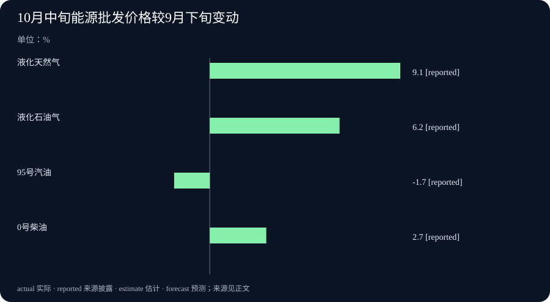

Daily Intelligence｜本地AI增加朗读与分类入口，生产资料价格分化
2026-10-25｜北京时间｜新闻查阅截止：2026-10-25 06:57:02+08:00，优先观察此前24小时首次公开的材料。两项AI运行软件发布的精确时刻已确认在窗口内；国家统计局价格公告与巴加投资谈判原文标注10月24日，小时未披露，不能确证严格处于24小时窗口。资料所讲的经营、统计和谈判时期另行说明。
Today's Thesis｜今天的判断
本地人工智能（AI）的进展，一边发生在使用入口，一边发生在数字计算。Ollama正式版把文本朗读和按选项分类接入日常运行；llama.cpp预发布则针对一条会让模型输出乱码的计算路径修补代码。两者说明，模型能否在具体任务中发挥作用，也取决于运行软件怎样处理输入、数字和输出。企业面对的成本与规则同样有具体变化：新公布的生产资料价格中，液化天然气上涨、95号汽油下降；巴基斯坦与加拿大又完成一轮投资协定谈判。值得追踪的是各环节发生了什么，而不是把软件新功能、市场涨价和谈判进度都视为一种整体加速。这是本报对本期材料的分析。
Executive Summary｜先看三条变化
- 本地模型多了朗读与分类入口：Ollama v0.40.11正式发布，增加苹果电脑操作系统macOS的流式语音生成和d3决策模型接入。流式是边生成边交付，朗读可以先开始；当前语音文档列的是英文模型，分类分数也须在实际任务中检验。正式发布
- 一项运行错误有了针对性代码修补：llama.cpp b11861预发布补上MiniMax相应计算路径中遗漏的缩放参数。缩放参数用来恢复紧凑数字的计算量级，漏用时会令结果失真。作者确认代码能构建成程序，并核对了修改，但未用受影响的模型文件完成从加载到生成的整段运行复测。预发布说明
- 成本分化，投资规则仍在商谈：10月中旬对9月下旬，液化天然气监测价格上涨9.1%，95号汽油下降1.7%；这是流通领域批发和销售价格。巴加第三轮投资协定谈判结束，签署的是本轮会议纪要，尚无协定生效或投资落地金额。国家统计局、巴基斯坦政府声明
AI Daily｜AI与产品
Ollama：让文字能读出声，让小模型按选项作答
Ollama于北京时间10月24日08:30:13发布v0.40.11正式版。Ollama是帮助使用者在本机运行和调用模型的软件；本次新增接入改变的是怎样使用模型，并非宣布底层模型都在当天首次训练完成。正式发布说明
语音部分，公告明确macOS现在可以生成语音。终端可把给定文字或聊天模型的回答边生成音频边播放，应用也可通过语音接口接收流式输出。它把“先得到一段文字，再另找朗读工具”之间的连接变得更直接。当前官方文档介绍的Phonon采用英文语音模型，使用者仍应核对目标语言、专有名词和数字的实际发音。语音文档
另一项新增接入是d3决策模型。它接收文字、结构化资料或静态图片，再按使用者提供的标准，选择类别、回答是非，或为选项评分。比如，一条客服消息要送给账单、退货还是技术团队，可以先把这三个类别和定义交给模型。这个例子说明可能的用途，并不代表本期已有企业部署成果。d3官方模型库
分数和概率让应用有了可以处理的结果，但它们仍是模型输出，不保证等同真实发生频率。类别定义是否清楚、错误分类会带来什么后果，都会影响使用价值。官方库还明确当前支持静态图片而非视频；本期没有新的准确率、音质或延迟对照，因此不把接口接通写成所有任务表现提高。语音和分类各解决一种输入输出需求，实际效果要分别观察。
llama.cpp：修补数字量级错误，保留运行验证的缺口
llama.cpp是一套在本地设备运行模型的软件。北京时间10月25日03:13:12发布的b11861，带有明确的“预发布”标记，其中包含针对MiniMax M3相应运行路径的代码修补。这次消息的新增事实是具体程序修改，不是模型重新发布或例行构建次数增加。本次预发布
问题涉及量化，即用更紧凑、较低精度的数字保存模型，计算时再配合缩放系数处理。原程序已经读入有关系数，却没有把它们传到后续计算步骤。开发者的故障说明指出，这使部分数值量级严重偏离，并对应M3.1 Flash输出乱码的问题。本次修改把这些缩放参数传入相应调用，沿用其他已支持模型的处理方式。已合并修补与说明
验证程度需要单独保留。作者报告编译通过，也就是代码能构建成程序，并核对了代码结构；但由于受影响的特定本地模型格式文件当时尚未公开，他明确没有在本机完成从加载到生成的整段运行复现。因此，可以确认修补已进入预发布，尚不能把它写成所有环境的输出都已验证恢复。这也没有提供通用速度或模型能力的提升数据。对相关使用者，后续最有用的进展是受影响文件可获取后的实际运行记录，以及修补是否进入更广泛使用的版本。
Business Daily｜商业与产业
巴基斯坦政府10月24日宣布，与加拿大在伊斯兰堡举行的第三轮双边投资协定谈判结束。本轮持续三天，双方谈判代表签署了会议纪要，记录这一轮的讨论和成果。原文没有列出三天各自日期，本期按公告明确的事件进度说明。政府正式声明，PR No. 381
投资协定谈判，是两国商谈跨国投资将来适用怎样的规则。本次政府声明希望形成更可预期、透明的框架，增强投资者信心，并列出可再生能源、采矿、农业和信息技术等希望扩大加拿大投资的领域。这些是谈判的目标和意向，原文没有宣布对应项目已经开工，也没有列新增投资金额。
签署的文件名称决定了当前进度。会议纪要把一轮谈过什么正式记下来，不等于两国已经签署完整投资协定，更不等于协定已获批准或生效。第三轮结束，也不表示全部谈判已经完成。声明没有给出最终文本、签署和生效时间，本期不据此推断企业已经取得哪些可执行的新权利。
对关注跨国经营的读者，具体后续是正式文本何时公布、之后经过哪些批准程序，以及是否出现可以核验的企业投资披露。规则变得更明确，有机会影响企业的长期选择；是否形成投资，还要看实际条款、项目条件和企业决定。把这一轮进展放在谈判阶段阅读，才能既看到新进度，也不提前计入尚未发生的资金流入。
Macro Observation｜宏观观察
国家统计局10月24日新公布10月中旬流通领域重要生产资料价格。生产资料是企业生产和经营使用的原材料等商品；这份资料观察的是经营企业批发和销售时的价格，并非居民消费价格指数。监测涉及全国31个省区市、300多个交易市场等样本。完整价格公告
本次比较有一处重要时间条件：10月上旬旬报因国庆节假日因素取消发布，所以“上期”是9月下旬，不是10月上旬。公告中的涨跌是10月中旬与这一比较期的变化，不能直接理解成通常相邻两旬的读数。取消的是该期公开旬报，也不能据此推断市场当时没有价格变化。
能源相关产品出现不同方向。液化天然气每吨6749.4元，比上期增加563.5元、上涨9.1%；液化石油气每吨7968.6元，增加462.5元、上涨6.2%。公告所列国六标准规格的95号汽油，每吨10906.5元，减少190.1元、下降1.7%；同属国六标准规格的0号柴油，每吨9370.7元，增加243.4元、上涨2.7%。两种液化气是不同产品，汽油和柴油也各有规格与用途，应按实际采购对象阅读。
全表9大类50种生产资料中，22种价格上涨、25种下降、3种持平。这个数量分布说明方向并不一致，不能当成按成交规模加权的总价格指数。上述汽油、柴油以每吨批发和销售价格计，也不是加油站每升零售价或新的零售调价通知。企业采购成本还取决于合同、运输、使用量和采购时期；本期没有证据把所有产品变化归于同一个原因。
Signal Dashboard｜信号仪表盘
| 主线 | 本次具体变化 | 后续观察 |
|---|---|---|
| Ollama语音 | macOS可边生成边朗读，应用可接入流式音频 | 当前英文模型的发音、语言和实际使用表现 |
| d3模型接入 | 按给定类别、是非或尺度返回评分 | 类别是否清楚，误分类与分数怎样处理 |
| llama.cpp预发布 | 修补特定MiniMax运行路径遗漏缩放参数 | 受影响文件的实际生成验证与后续版本 |
| 生产资料价格 | 气价、汽油和柴油方向分化 | 具体规格、采购合同与可比时期 |
| 巴加投资谈判 | 第三轮结束，签署本轮会议纪要 | 正式文本、批准和生效程序、实际投资披露 |
Deep Insight｜深度观察
一个可用的AI功能，包含接口、计算和工作选择
朗读和分类看起来都是给模型加一个入口，但它们改变工作的方式不同。语音输出让使用者能在文字尚未全部生成时开始听，分类则让应用拿到有限选项及分数，便于把任务交给下一步处理。对开发者而言，这些接入可能减少单独连接工具的工作；对最终使用者，价值取决于自己是否需要这种交互。如果主要需求是阅读中文材料，当前英文朗读模型就不能直接替他回答语言问题。如果需求是分流客服消息，则应先把类别定义得清楚，而不是追求回答更长。
分类尤其说明，应用需要参与决定什么叫有用。假设“账单问题”与“重复扣款”被同时设成两个互相竞争的类别，同一条消息就可能合理地落入两者。模型返回一个很高的分数，也未必解决定义重叠。较好的起点是先明确任务：要选择负责团队，还是识别消息是否涉及某个风险；再用与实际工作相近的例子检查错误。一个小模型能按既定格式返回结果，与系统能否据此采取正确动作，是前后相连、但不能互相替代的两步。这是本报提出的使用思路，不是本次发布已经报告的客户收益。
llama.cpp的修补把注意力拉到更底层。模型文件里的数字不是脱离保存方式就能直接使用；采用紧凑表示时，运行程序必须把缩放关系带入计算。遗漏这一连接，即使模型本身没有重新训练，输出也可能变得无法阅读。因此，评估本地模型时，除了模型名称，还要知道使用了哪种文件和运行版本。遇到明显异常，问题可能来自执行程序如何解释数字，而非模型在所有任务上能力差。此次修补为一个具体故障给出了代码处理，端到端运行缺口则提示下一步证据应来自哪里。
这类进展通常不会立刻产生一个漂亮的整体提升百分比。增加朗读入口、把类别分数交给应用、修正数值使用方式，分别对应不同环节。把它们全部归为“更强”，会丢掉真正可安排的工作：某个团队可以先试朗读是否方便，另一个团队需要测分流错误，受影响模型的使用者则需要确认修补后的运行。这些具体任务有各自的成本与完成条件，也适合用各自的记录继续判断。
生产资料价格提供了一个相似但独立的经营提醒。天然气、液化石油气、汽油和柴油都与能源有关，方向却并不一致。企业若只依据一个“能源上涨”的总说法安排预算，就可能忽略自己实际采购的产品。相反，记录材料规格、计价单位和合同调整方式，才更接近企业真正承受的成本。本次还跨过取消发布的10月上旬，比较起点需要保留；这并不削弱数据，而是决定应当怎样使用它。
投资谈判的作用则更偏向未来规则。会议纪要让本轮商谈进度有了正式记录，但企业还不能把意向领域写成已获得的项目或资金。等待具体条款和后续程序，并不等于否认谈判的意义，而是把制度进度与实际投资分开记录。今天几条新闻共同带来的实用要求，是把抽象方向拆成能够继续观察的具体环节：哪种输出接通了，哪个错误得到修补，哪项采购价格变了，哪一步规则程序完成了。跨事件联系属于本报分析，并不说明软件发布、材料价格和巴加谈判之间存在已证实的因果关系。
Tomorrow Watch｜明日值得追踪
- Ollama语音接入在实际英文文本中的发音表现，以及分类应用如何定义和处理选项。
- llama.cpp受影响模型文件可获取后的整段运行验证，预发布修补是否进入后续常用版本。
- 下一期生产资料价格能否与本期按相同规格、相同口径比较，企业实际采购成本怎样变化。
- 巴加谈判是否公布完整文本、下一轮安排与正式签署程序，而非只重复意向领域。
- 如有企业投资消息，是否同时给出主体、金额、条件和实际执行进度。
One Chart｜一张图
下图展示10月中旬相对9月下旬，四种能源相关生产资料监测价格的涨跌幅：液化天然气上涨9.1%，液化石油气上涨6.2%，95号汽油下降1.7%，0号柴油上涨2.7%。单位为%，四项采用同一期与同一比较期。图表原始来源
图中的 reported 表示来源披露的数字。监测的是流通领域批发和销售价格，汽油、柴油也不是加油站零售价；10月上旬旬报因国庆取消发布，因此比较期是9月下旬。四种产品规格、用途和成交规模不同，图表用于观察分化，不把四项简单平均成能源价格总指数，更不推算居民整体通胀。

Quote of the Day｜今日引用
“Reading maketh a full man; conference a ready man; and writing an exact man.”
— Francis Bacon（弗朗西斯·培根），《论读书》，收入《随笔集》1625年增订版；引文采用现代拼写转录。原著全文
中文：阅读使人充实，交谈使人敏捷，写作使人严谨。
培根在这篇文章中讨论学习的用途与限度，要求读者权衡思考，而非照单全收。这里的conference指交谈或讨论；1625年是所指增订版的年份，不声称本句首次写于该年。中文为本报译文。这是关于学习的经典论述，不是对现代AI效果的一项实验结论。
Action Items｜今天值得思考什么
- 需要朗读，还是需要分类？ 先写清希望改善的工作环节，再核对语言、输入类型与输出形式，用真实相近的例子试用。
- 分类选项彼此清楚吗？ 检查类别是否重叠，记录错分的后果，再决定分数达到什么条件时可以进入下一步。
- 异常来自模型还是运行程序？ 保留模型文件格式与运行版本，关注针对性修补的验证范围，不把编译通过直接当成全部输出正确。
- 采购比较的是什么价格？ 同时记录产品规格、每吨单位和9月下旬比较期，区分批发监测、合同成本与零售价格。
- 谈判走到哪一步？ 把会议纪要、完整文本、正式签署、生效和实际投资分别记录，等后续可核实材料改变判断。
信息边界
本期固定截止为2026-10-25T06:57:02+08:00，窗口自2026-10-24T06:57:02+08:00开始。Ollama正式版发布时间为24日08:30:13北京时间；llama.cpp b11861预发布为25日03:13:12北京时间，两项均在窗口内，依据各自发布记录而非代码提交时刻。国家统计局与巴基斯坦政府原文标注24日，小时未披露，不能确证严格24小时。
软件修改和验证在发布前进行，本报未独立运行这些模型；llama.cpp作者也保留了受影响文件的端到端验证缺口。价格资料对应10月中旬，比较9月下旬；投资消息对应一轮三天谈判结束，原文未列完整起止日期。功能与数据按来源披露，建议和跨事件联系属于本报分析。